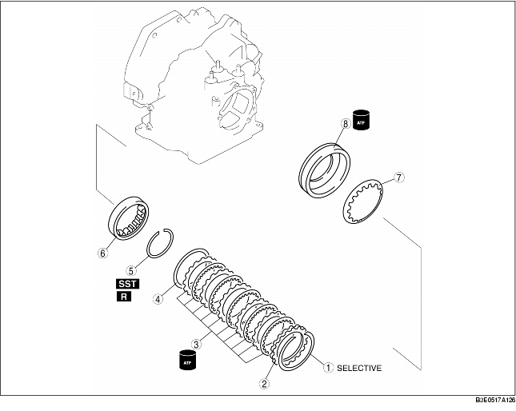
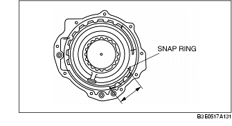
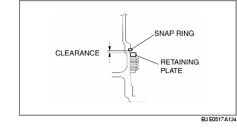

Low and reverse brake and one-way clutch inner race disassembly/assembly
1. Perform the preinspection before disassembly.
(See Low and Reverse Brake Preinspection.)
2. Disassemble in the order indicated in the table.
3. Assemble in the reverse order of disassembly.

|
1
|
Snap ring
|
|
2
|
Retaining plate
|
|
3
|
Drive and driven plates
|
|
4
|
Dish plate
|
|
5
|
Snap ring
(See Snap Ring Disassembly Note.)
|
|
6
|
One-way clutch inner race
|
|
7
|
Piston return spring
|
|
8
|
Low and reverse brake piston
|
Snap Ring Disassembly Note
1. Install the SSTs as shown.

- • Depress the one-way clutch inner race only enough to remove the snap ring.
- Overpressing will damage the one-way clutch inner race assembly edges.
2. Compress the one-way clutch inner race.
3. Remove the snap ring.
4. Remove the SSTs and remove one-way clutch inner race and the piston return spring.
Low and Reverse Brake Piston Disassembly Note
Air pressure

Assembly Procedure
1. Measure the facing thickness in three places, and determine the average of the three readings.
- • Installing the low and reverse brake piston may damage its seal. Carefully install the low and reverse brake piston by pushing evenly around the circumference.
2. Apply ATF to the circumference of the low and reverse brake piston seal, and install the piston to the transaxle case.
3. Install the piston return spring and one-way clutch to the transaxle case.

4. Install the SSTs as shown.

- • Depress the one-way clutch inner race only enough to install the snap ring.
- Overpressing will damage the one-way clutch inner race assembly edges.
5. Compress the one-way clutch inner race.

- • The transaxle body may be damaged if installed incorrectly. Make sure to install the transaxle body in such a way that the end of the snap ring does not enter the area shown in the figure.
6. Install the snap ring.
7. Remove the SSTs.
8. Install the dish plate.
9. Install the drive and driven plates in the following order.
4/6 type
5/5 type
10. Install the retaining plate and the snap ring.

11. Measure the low and reverse brake clearance.
- (1) Set the dial gauge to the low and reverse brake.
-
(2) Set the measuring point of the dial gauge to the low and reverse brake piston.

-
(3) Apply compressed air to the part indicated in the figure and let the low and reverse brake piston stroke three times.

- (4) Apply compressed air and operate the low and reverse brake piston. Read the value when the indicator of the dial gauge stops.
- (5) Release the compressed air and read the dial gauge when the low and reverse brake piston is not operating.
- (6) Calculate the low and reverse brake clearance according to the following formula:
- Step (4) value-Step (5) value= low and reverse brake clearance.
- (7) Measure the clearances at four locations (90°
-
apart) by following the steps from (3) to (6). Verify that the average value is within the specification below:

- (8) Add the thickness to the average value calculated in step (7), and select the snap ring whose range includes the value.
- (9) Install the selected snap ring and perform steps (2) to (7) again. Verify that the calculated value satisfies the clearance specification.
Snap ring seizes
12. Inspect the low and reverse brake operation by applying compressed air as shown.